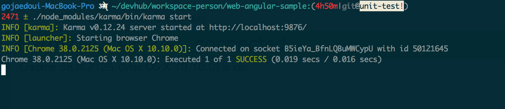

AngularJS에서 테스트 만들기
AngularJS는 각 컴포넌트들을 단위 테스트를 할 수 있게 지원해 준다. 사실 이는 모두 의존관계 주입 기반하에 만들어진 프레임워크라 가능하다. 그리고 karma라는 테스트 러너를 별도 프로젝트로 만들어 테스트를 쉽게 돌려볼 수 있는 툴도 제공하고 있다.
karma 설치하기
카르마는 카르마 커맨드라인 인터페이스를 설치해야 카르마를 구동할 수 있다. 먼저 다음과 같이 카르마 커맨드라인 인터페이스를 설치한다. (카르마는 node.js 기반이다.)
npm install -g karma-cli
그리고 카르마를 적용할 프로젝트에 위치하여 다음과같이 입력한다.
$ npm install karma --save-dev
# 프로젝트에서 필요로하는 플러그인을 설치한다.
$ npm install karma-jasmine karma-chrome-launcher --save-dev
카르마를 실행하려면 커맨드창에 다음과 같이 입력한다.
./node_modules/karma/bin/karma start
karma 설정하기
카르마로 테스트를 돌릴려면 카르마 설정파일이 필요하다. 카르마 설정파일은 커맨드라인 인터페이스를 통해서 생성할 수 있는데 다음과 같이 커맨드창에 입력하여 보자.
/node_modules/karma/bin/karma init karma.conf.js
그러면 다음과 같이 질문이 나타나고 그에 대한 대답에 따라 설정파일이 만들어진다.
hich testing framework do you want to use ?
(어떠한 테스팅 프레임워크를 사용할지 묻는다.)
Press tab to list possible options. Enter to move to the next question.
> jasmine
Do you want to use Require.js ?
(Require.js 를 사용하는지 묻는다.)
This will add Require.js plugin.
Press tab to list possible options. Enter to move to the next question.
> no
Do you want to capture any browsers automatically ?
(어떠한 브라우저 환경에서 테스트할지 묻는다.)
Press tab to list possible options. Enter empty string to move to the next question.
> Chrome
>
What is the location of your source and test files ?
(테스트 대상과 테스트 스펙 파일에 대한 위치를 묻는다. AngularJS 어플리케이션은 angular.js 와 angular-mocks.js이 필요하다.)
You can use glob patterns, eg. "js/*.js" or "test/**/*Spec.js".
Enter empty string to move to the next question.
> libs/angular/angular.js
> libs/angular/angular-mocks.js
> demoTestApp.js
> test/*Spec.js
Should any of the files included by the previous patterns be excluded ?
You can use glob patterns, eg. "**/*.swp".
(테스트할 파일들중 제외할 파일들에 대한 패턴을 묻는다.)
Enter empty string to move to the next question.
>
Do you want Karma to watch all the files and run the tests on change ?
(파일이 변경되었을 때 자동으로 테스트를 실행할지 묻는다.)
Press tab to list possible options.
> yes
그러면 karma.conf.js파일이 생성된다. 위 설정은 test/*Spec.js 대상으로 Chrome기반으로 테스트를 돌린다.
단위 테스트 작성
앞의 카르마설정에서 태스트 대상 어플리케이션을 demoTestApp.js로 하였다. 우리는 간단한 사용자 목록을 조회하는 기능을 구현해야 하는데 단위 테스트를 작성하면서 demoTestApp.js 파일에 구현 코드를 추가하겠다. 기본적으로 컨트롤러와 서비스를 정의만 해놓자. 전체 소스코드는 GitHub web-angular-sample 프로젝트의 unit-test Branch에서 demoTestApp.js 파일과 test폴더 안에 spec 파일들로 확인할 수 있다.
angular.module('demoTestApp', []).
controller('UserListCtrl', ['$scope', function ($scope) {
}]).
factory('UserService', [function () {
return {
};
}]);컨트롤러 단위 테스트 작성
앞에서 설정하였듯이 테스트 코드는 Jasmine을 이용하여 작성한다. test폴더밑에 controllerSpec.js 파일을 만들고 다음과 같이 작성한다.
describe('컨트롤러를 테스트한다.', function () {
var UserListCtrl, scope;
beforeEach(function () {
//테스트할 모듈을 로드한다.
module('demoTestApp');
inject(function ($rootScope, $controller) {
scope = $rootScope.$new();
//테스트 대상 컨트롤러에 의존관계를 주입하면서 가지고온다.
UserListCtrl = $controller('UserListCtrl', {
$scope : scope
});
});
});
it('UserListCtrl가 정의되어 있다.', function() {
//UserListCtrl 컨트롤러가 정의되어있는지 테스트한다.
expect(UserListCtrl).toBeDefined();
});
});이제 카르마를 실행하면 커맨드 창에 다음 그림과 같은 내용을 볼 수 있다.

다음으로 사용자 목록 모델을 정의하는 테스트를 추가하자.
it('UserList에 userList가 배열로 정의되어 있다.',function () {
expect(scope.userList).toBeDefined();
});그러면 커맨드창에 테스트 실패를 확인할 수 있을 것이다. 그럼 이제 테스트를 성공하도록 demoTestApp.js를 수정하자.
angular.module('demoTestApp', []).
controller('UserListCtrl', ['$scope', function ($scope) {
$scope.userList = [];
}]).
//생략마지막으로 UserService를 사용하여 사용자목록을 조회하는 메소드를 테스트한다.
describe('컨트롤러를 테스트한다.', function () {
var UserListCtrl, scope, mockService;
beforeEach(function () {
module('demoTestApp');
inject(function ($rootScope, $controller) {
scope = $rootScope.$new();
//가짜 사용자 조회 서비스를 만든다.
mockService = {
getUserList: function(callback){
callback.call(null,[{name : "test"}]);
}
};
//가짜 사용자 조회 서비스를 주입한다.
UserListCtrl = $controller('UserListCtrl', {
$scope : scope,
UserService : mockService
});
});
});
//생략
it('사용자목록을 조회한다.', function () {
scope.searchUsers();
//사용자를 조회 메소드를 사용하면 1건의 데이타가 있음을 예상한다. (위에서 1건만 준다.)
expect(scope.userList.length).toEqual(1);
});
});새로운 스펙을 추가하면 에러가 날 것이다. 왜냐면 우리는 사용자 목록 조회 기능을 구현하지 않았다. 그럼 사용자 목록 조회 기능을 demoTestApp.js에 추가해보자.
angular.module('demoTestApp', []).
//UserService 디펜던시를 추가한다.
controller('UserListCtrl', ['$scope','UserService', function ($scope, UserService) {
$scope.userList = [];
$scope.searchUsers = function () {
UserService.getUserList(function (data) {
//UserService의 getUserList를 사용하여 사용자 목록을 조회한다.
$scope.userList = data;
});
};
}])
//생략서비스 단위 테스트 작성
다음으로 UserService 단위 테스트를 작성해 보자. UserService는 앞에서 컨트롤러 테스트 작성할 때 보았듯이 getUserList 메소드를 통하여 주어진 사용자 목록을 조회한다. 그럼 다음과 같이 serviceSpec.js 파일을 작성한다.
describe('서비스를 테스트한다.', function () {
var UserListCtrl, scope, mockService;
beforeEach(function () {
module('demoTestApp');
});
it('UserService가 정의되어 있다.', inject(function(UserService) {
expect(UserService).toBeDefined();
}));
it('UserService는 사용자 목록을 조회한다.', inject(function(UserService, $httpBackend) {
//$httpBackend 서비스를 이용하여 가짜 HTTP에 대한 응답을 해주도록 한다.
$httpBackend.when('GET','sample.json')
.respond([{ name : "test" }]);
//서비스를 호출하고 콜백함수를 넣어준다.
UserService.getUserList(function (data) {
d = data;
});
//요청에대하여 응답을 준다.
$httpBackend.flush();
//위에서 1건을 주도록 하였으니 1건이 되기를 기대한다.
expect(d.length).toBe(1);
}));
});이제 위 테스트를 만족하기 위해 서비스 코드를 작성하자.
//생략
factory('UserService', ['$http', function ($http) {
return {
getUserList : function (callback) {
$http.get('sample.json')
.success(callback);
}
};
}]);이제 테스트 결과를 커맨드창에서 보면 5건의 테스트에 대하여 성공을 확인할 수 있을 것이다.